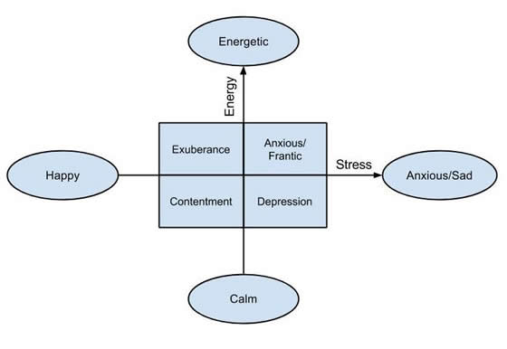

In most existing music emotion classification methods, the emotions of songs are classified according to the traditional emotion model of psychologist Robert Thayer. The model classifies songs as happy, sad, calm, and energetic according to energy and stress. The eight categories created by the Thayer model include the extremes of two straight lines and every possible intersection of the straight lines (for example, happy, energetic, or sad peace).

Faster tempo is associated with high-energy songs, and slower tempo is associated with lower energy and poorer songs. The loudness or intensity of the song may be associ ted with anger, while softer songs suggest softness, sadne s or fear . A higher overall pitch can indicate happiness, arefree, and relaxed emotions in a song, while a lower pitch ind cates a darker, sad, and serious pitch. Timbre is a tonal compone t produced by harmonics and is a curious indicator of emotions. A t am of researchers from the BNM Institute of Technology in Bangalore, ndia stated: “The tone stimulates human energy levels and has nothin to do with rhythm or harmonic saturation. A sound source with a simple harmonic profile has a “darker” tone and tends to Soothe human emotion ". The same group of researchers generated correlation tables of inte sity, timbre, pitch, and rhythm to identify various emotions.
| Mood | Intensity | Timbre | Pitch | Rhythm |
|---|---|---|---|---|
| Happy | Medium | Medium | Very High | Very High |
| Exuberant | High | Medium | High | High |
| Energetic | Very High | Medium | Medium | High |
| Frantic | High | Very High | Low | Very High |
| Anxious/Sad | Medium | Very Low | Very Low | Low |
| Depression | Low | Low | Low | Low |
| Calm | Very Low | Very Low | Medium | Very Low |
| Contentment | Low | Low | High | Low |